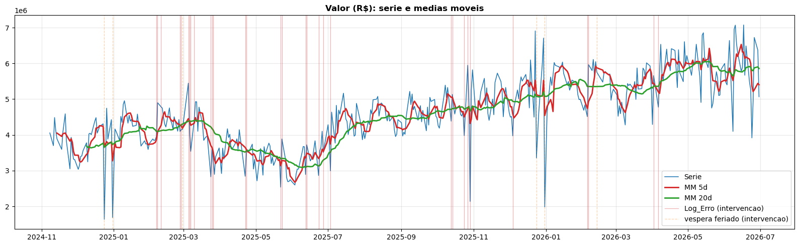
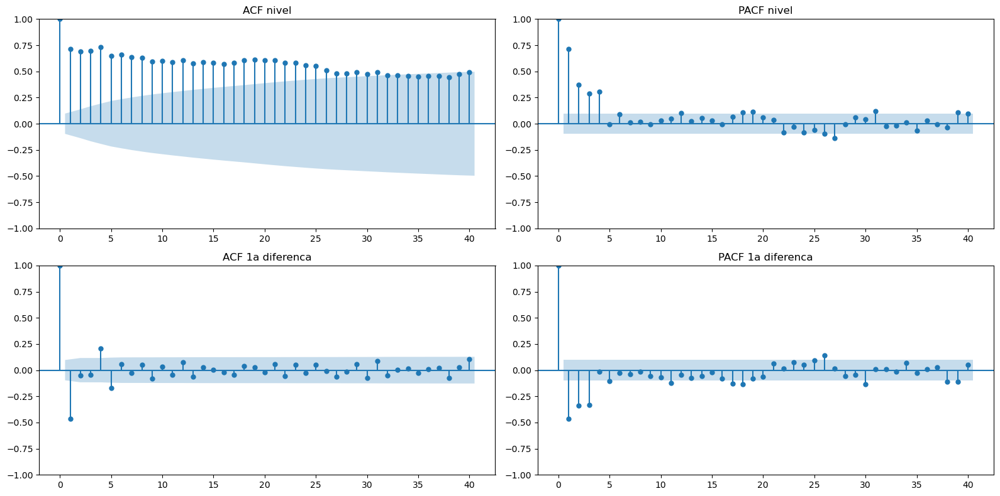
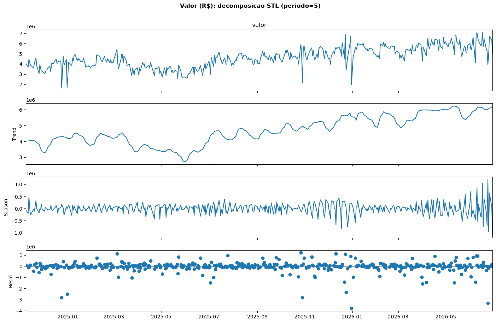
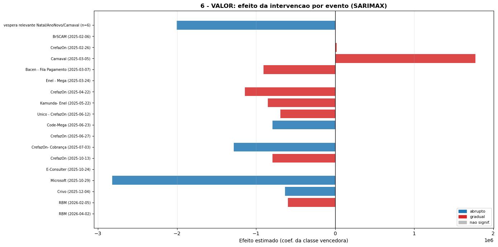
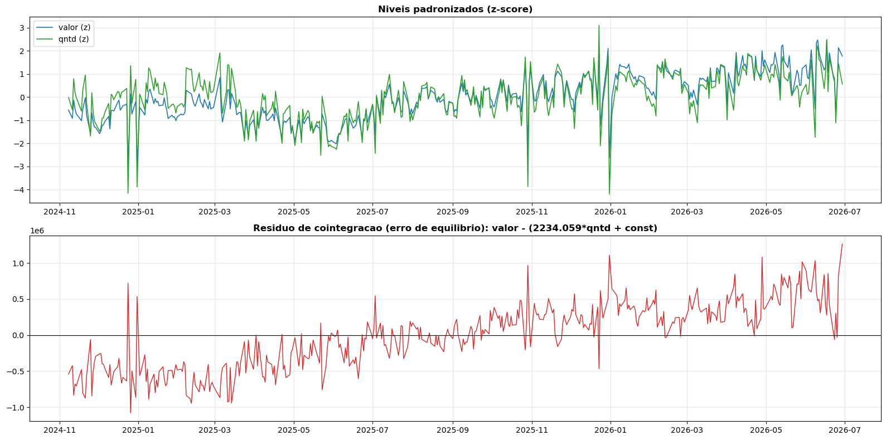
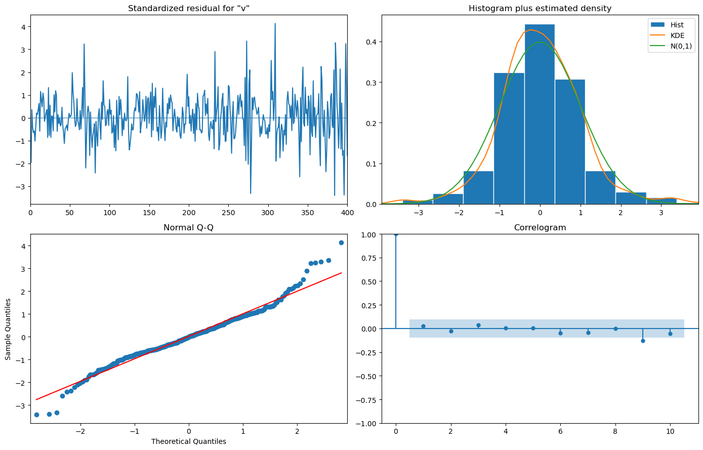
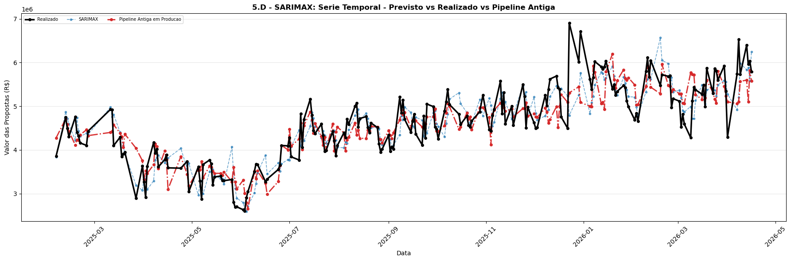
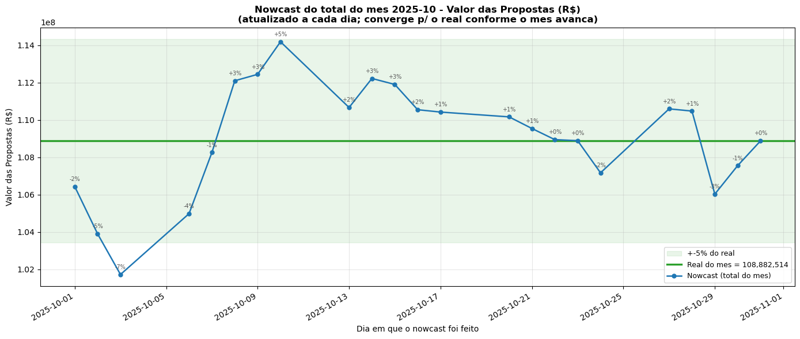

Séries temporais clássicas, análise de intervenção (Box–Tiao) e teste de cointegração
aplicados às séries diárias de valor e quantidade de propostas (etapa 16).
Daniel Ramazzotte · Julho/2026
O modelo em produção (Pipeline TPOT / ML) prevê bem, mas é uma caixa-preta: não diz
o quanto a fila pesa, nem como a série se comporta ao longo do tempo. Para uma leitura
econométrica, precisamos de um modelo branco.
d=1), choque do dia anteriorm=5) — o ML só capta isso de forma indireta via lags.3 / 35[!important] Meta
Um benchmark clássico interpretável, competitivo com o melhor ML, que explique o que
move a série de valor.
Agregação diária das propostas da etapa 16, apenas dias úteis (exclui sábados,
domingos e feriados via workadays) → sazonalidade semanal regular m = 5.

4 / 35| Papel | Valor | Quantidade |
|---|---|---|
Endógena y_t |
valor diário (R$) | quantidade diária |
| Exógena D-1 | fila_d1 — fila de pagamento de ontem (etapa 15) |
valor_d1 — valor de ontem |
| Dummies calendário | dia-da-semana (ter…sex; 2ª = referência) |
idem |
| Intervenção | pulso/degrau dos dias especiais |
idem |
t-5 na grade (que desalinha quando um feriado some da série).drop_first) para evitar colinearidade.d = 1. A série é I(1) (não-estacionária em nível, estacionária na 1ª diferença,ma.L1. Corrige a previsão pelo choque (erro) do dia anterior →m=5. Termo ma.S.L5 capta o resíduo do padrão semanal.fila_d1 + dummies).Antes de estimar: estacionariedade (ADF/KPSS), autocorrelação (ACF/PACF) e
decomposição (STL, período 5).

d=1.Tendência suave de médio prazo + sazonalidade semanal clara + resíduo com spikes nos
dias atípicos (que a intervenção vai tratar).

9 / 35pmdarima.auto_arimaBusca stepwise por AIC, sazonalidade m = 5, escolhida uma vez por série
(fallback fixo se a busca falhar).
| Série | Ordem selecionada | AIC (univariado) |
|---|---|---|
| Valor | SARIMA(0,1,1)(0,0,1,5) |
12.020,7 |
| Quantidade | SARIMA(0,1,1)(0,0,2,5) |
5.901,3 |
(0,1,1): 1 diferença (I(1)) + MA(1) para o choque do dia anterior.(0,0,1,5) / (0,0,2,5): MA sazonal no lag 5 (semanal).O ponto que torna a comparação honesta: replicar a operação real (retreina todo dia,
prevê o próximo).
| Walk-forward | Normal (1 ajuste) | |
|---|---|---|
| Nº de ajustes | N (um por dia) | 1 |
| Usa dados futuros p/ estimar? | Não (sem vazamento) | in-sample: sim; split: não |
| O que mede | Erro out-of-sample realista | qualidade de ajuste / 1 ponto |
| Custo | N× mais lento | barato |
| Onde no estudo | ranking e correção de viés | seções de diagnóstico |
11 / 35[!note]
O MAPE/RMSPE do ranking vem do walk-forward 1-passo — comparável de igual para igual
com a Pipeline Antiga (que no backup também é previsão diária de 1 passo).
Dias atípicos (Log_Erro e vésperas) são retirados do datas_eval: o ranking
pontua apenas dias normais, que são o alvo real.
Correção de viés (aplica_debias). Sobre a sequência walk-forward, corrige a próxima
previsão pela média dos erros passados (janela 10 dias, rolling + shift(1) → sem
vazamento). Quase zera o viés ao custo de ~0,3 p.p. de RMSPE.
Adicionadas na exógena (dow_ter…dow_sex, 2ª = referência), então usadas por SARIMAX e
pelos ajustes de intervenção que recebem exógena.
exog=None, só m=5) por design: assim o13 / 35[!note]
No walk-forward a exógena é padronizada por z-score (reparametrização linear, previsão
idêntica). ComMIN_TREINO≈25(~5 semanas) todos os dias-da-semana aparecem em qualquer
janela → sem matriz singular.
Ajuste in-sample no histórico completo, fila_d1 padronizada (z-score) + dummy de pulso:
SARIMAX(0,1,1)x(0,0,1,5) — N=404 — AIC = 11.631
================================================================================
coef std err z P>|z| interpretação
--------------------------------------------------------------------------------
fila_d1_z +1,027e+05 2,34e+04 +4,38 0,000 efeito da fila D-1 (padronizada)
pulso_erro -4,545e+05 9,30e+04 -4,89 0,000 efeito dos dias de erro
ma.L1 -0,7829 0,034 -22,87 0,000 choque MA(1) não-sazonal
ma.S.L5 -0,0862 0,046 -1,87 0,062 sazonal semanal (limítrofe)
================================================================================
fila_d1 (+R$102,7 mil/desvio, p<0,001): +1 dp de fila (~54 propostas) → ~R$102,7 milpulso_erro (−R$454,5 mil, p<0,001): dias de erro derrubam o valor ~10% da médiama.L1 (−0,78): principal mecanismo preditivo — corrige o nível por 78% do choque de ontem.ma.S.L5 (−0,086, p≈0,06): resíduo semanal fraco (a maior parte já foi absorvida).| Especificação | AIC |
|---|---|
| SARIMA univariado (sem exógena/intervenção) | 11.640 |
SARIMAX (fila_d1 + pulso_erro) |
11.631 |
Os dois regressores reduzem o AIC e ambos são altamente significativos (p < 0,001) —
evidência de que a fila D-1 e a intervenção agregam informação genuína, não só grau de
liberdade.
Para cada dia especial (eventos do Log_Erro operacional + vésperas de feriado)
ajustamos SARIMA/SARIMAX com regressores de intervenção e classificamos o efeito:
Escolha: por evento ajustamos os dois modelos e ficamos com o de coeficiente
significativo (p < 0,05) e menor AIC. Aqui a série mantém os dias especiais —
é necessário para estimar o efeito.
18 eventos classificados. Predominam efeitos negativos (paradas/erros derrubam o valor);
Carnaval aparece como positivo (acúmulo pós-feriado).

19 / 35Comparando o SARIMA sem e com as dummies de intervenção (valor, N=409):
| Modelo | AIC | BIC | DP resíduo | MAE resíduo | LB p(10) | LB p(20) |
|---|---|---|---|---|---|---|
| PRÉ (sem intervenção) | 5.728 | 5.744 | 359,4 | 246,6 | 0,01 | 0,00 |
| PÓS (com intervenção) | 5.641 | 5.669 | 327,2 | 230,9 | 0,36 | 0,18 |
[!important] A sutileza
A intervenção entra no ranking como descontaminação do ajuste, não como predição do
dia do evento. Nos dias avaliados (normais) as dummies valem 0; o benefício é que os
parâmetros AR/MA saem estimados sem serem puxados pelos spikes passados.
Um look-ahead pequeno e estrutural: a classificação da forma (abrupto × gradual) é
calculada uma vez na série inteira; já os coeficientes são reestimados a cada dia no
walk-forward (iloc[:loc], só o passado). A maior parte da informação é calendário
(vésperas e dias de log são conhecidos de antemão), então reclassificar dentro do
walk-forward custaria caro e mudaria pouco.
Cointegração testa-se nos níveis, não nas diferenças. O pré-requisito é que ambas sejam
I(1) — o que a diferenciação já confirmou.
(1, −β), o ticket médiovalor/qtd) seria estacionário → proporcionalidade estável.| Teste | Estatística | Resultado |
|---|---|---|
| Engle-Granger | p = 0,96 | NÃO rejeita H0 → sem cointegração |
| Johansen (traço, sem tendência) | 1 relação | ambíguo |
| Johansen (com tendência) | 2 relações | vs. ADF-ct indica trend-stationary |
| ADF do ticket médio | p = 0,86 | erro de equilíbrio não-estacionário |

24 / 35[!warning] Conclusão
O erro de equilíbrio deriva (não volta à média) → modelar as séries separadamente.
Como as ordens ficam mistas I(0)/I(1) para a qtd, o follow-up correto seria o teste de
limites ARDL (Pesaran-Shin-Smith), não VECM.

σ² grande) → ler os erros-padrão de σ² comfila_d1/pulso_erro (z≈4–5) é robusta.Isso justifica a intervenção (trata os spikes) e a correção de viés por cima.
26 / 35| Modelo | MAPE % | RMSPE % | R² | |Viés| (R$) | Mediana % |
|---|---|---|---|---|---|
| SARIMAX | 7,34 | 9,22 | 0,75 | 11.924 | 6,15 |
| Pipeline Antiga em Produção | 7,21 | 9,55 | 0,74 | 28.974 | 5,32 |
| SARIMA (univariado) | 7,57 | 9,55 | 0,75 | 25.049 | 6,45 |
| SARIMAX (corrigido) | 7,61 | 9,73 | 0,73 | 5.631 | 6,25 |
| SARIMA (corrigido) | 7,89 | 10,03 | 0,72 | 3.941 | 6,56 |

O SARIMAX acompanha bem o nível e a sazonalidade; os maiores erros concentram-se nos
saltos pós-atípicos (justamente onde a Antiga também erra).
| Modelo | MAPE % | RMSPE % | R² | Mediana % |
|---|---|---|---|---|
| SARIMA (univariado) | 7,38 | 9,22 | 0,47 | 6,50 |
| SARIMA (corrigido) | 7,69 | 9,73 | 0,41 | 6,32 |
| SARIMAX | 7,64 | 10,01 | 0,38 | 6,01 |
| Pipeline Antiga em Produção | 8,01 | 10,23 | 0,36 | 6,38 |
| SARIMAX (corrigido) | 8,07 | 10,54 | 0,31 | 6,42 |
30 / 35[!warning] Contraste importante
Para a quantidade, o SARIMA univariado vence — a exógenavalor_d1não ajuda
(piora RMSPE). O padrão semanalm=5já basta. Confirma o valor de deixar SARIMA e SARIMAX
lado a lado no ranking.
| Modelo | O que é | Resultado |
|---|---|---|
| ARDL (bounds test) | Relação de longo prazo com ordens mistas I(0)/I(1) | follow-up da cointegração; não superou o SARIMAX |
| Log-retorno | Modela r_t = ln(y_t/y_{t-1}), estabiliza variância |
competitivo, mas atrás do SARIMAX |
| Nowcast mensal | Realizado acumulado + previsão dos dias restantes | converge para o total real ao longo do mês |
| SARIMAX mensal | Uma previsão do total do mês antes de ele começar | linha de referência |

31 / 35[!success] Valor → SARIMAX
(0,1,1)(0,0,1,5)+fila_d1+pulso_erro
Melhor RMSPE (9,22%) e R² (0,75) do estudo; MAPE (7,34%) praticamente empatado com
a Pipeline Antiga, com a vantagem decisiva de ser interpretável.[!success] Quantidade → SARIMA univariado
(0,1,1)(0,0,2,5)
A exógena não ajuda; o modelo univariado com sazonalidade semanal é o melhor e o mais
parcimonioso (MAPE 7,38%, RMSPE 9,22%).
O SARIMAX de valor mostra, com significância estatística, que:
1. a fila do dia anterior é driver positivo e forte (+R$1,9 mil/proposta);
2. os dias de erro operacional derrubam o valor em ~10% e merecem intervenção;
3. a dinâmica diária é bem descrita por suavização MA(1) com leve componente semanal.
Conclusões
- Modelo branco competitivo com o melhor ML e superior no RMSPE para valor.
- A análise de intervenção melhora o ajuste (AIC↓, Ljung-Box deixa de rejeitar).
- Sem cointegração valor × qtd → séries modeladas separadamente.
Limitações
- Heterocedasticidade e caudas pesadas nos resíduos (mitigadas por intervenção + debias).
- Classificação da forma da intervenção com pequeno look-ahead estrutural (calendário).
- Não substitui a Pipeline Antiga em produção (retreinada quase diariamente).
Próximos passos
- Injetar intervenções (Carnaval/vésperas) como exógena futura determinística no nowcast.
- Avaliar reclassificação da intervenção dentro do walk-forward (rigor total).
docs/justificativa_sarimax_valor.mdscripts/producao/projecoes_valor.py, projecoes_qtd.pyresultados/backup_valor.xlsx, backup_qtd.xlsx